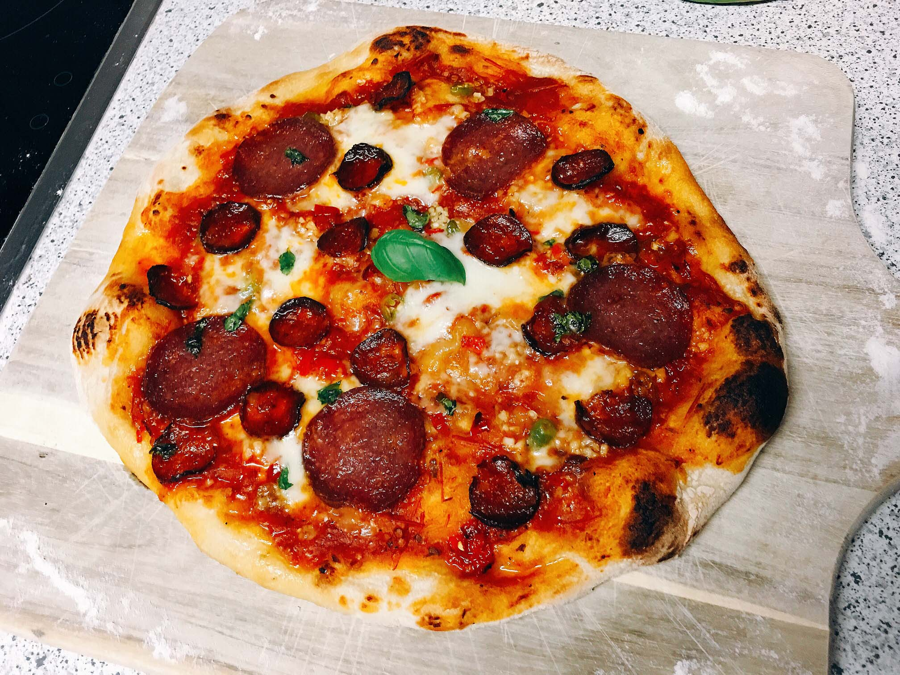

Spicey Pizza

A pizza made for spicey lovers
Ingredients
- 1 ball Best Pizza Dough (or Food Processor Dough or Thin Crust Dough)
- ⅓ cup Homemade Easy Pizza Sauce
- 4 ounces fresh mozzarella cheese (or about ¾ cup shredded mozzarella)
- Kosher salt (optional)
- 8 to 10 Kalamata olives
- 1 Fresno or Calabrian chili pepper
- 2 basil leaves
Method
- Follow the Pizza Dough recipe to prepare the dough(This takes about 15 minutes to make and 45 minutes to rest.)
- Place a pizza stone in the oven and preheat to 500°F. OR preheat your pizza oven
- Prepare the Easy Pizza Sauce.
- Slice the mozzarella into ¼ inch thick pieces. If it’s incredibly watery fresh mozzarella (all brands vary), you may want to let it sit on a paper towel to remove moisture for about 15 minutes then dab the mozzarella with the paper towel to remove any additional moisture.
- Slice the olives in half. Thinly slice the chili pepper (keep the seeds)
- When the oven is ready, dust a pizza peel with cornmeal or semolina flour. If you don’t have a pizza peel, you can use a rimless baking sheet or the back of a rimmed baking sheet.
- Transfer the pizza to the pizza stone using the pizza peel, then bake until the cheese is melted, about 7 minutes in the oven (or 1 minute in the pizza oven).
- Remove from the oven and allow to cool for minutes, then top with torn basil leaves. Slice into pieces and serve immediately.